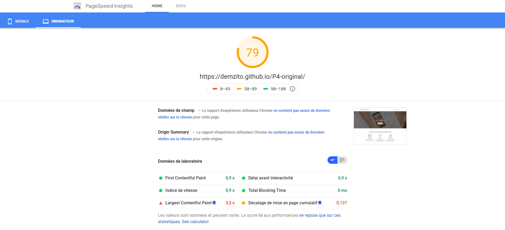
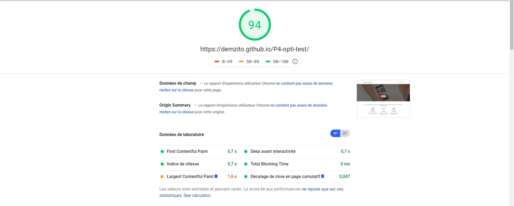
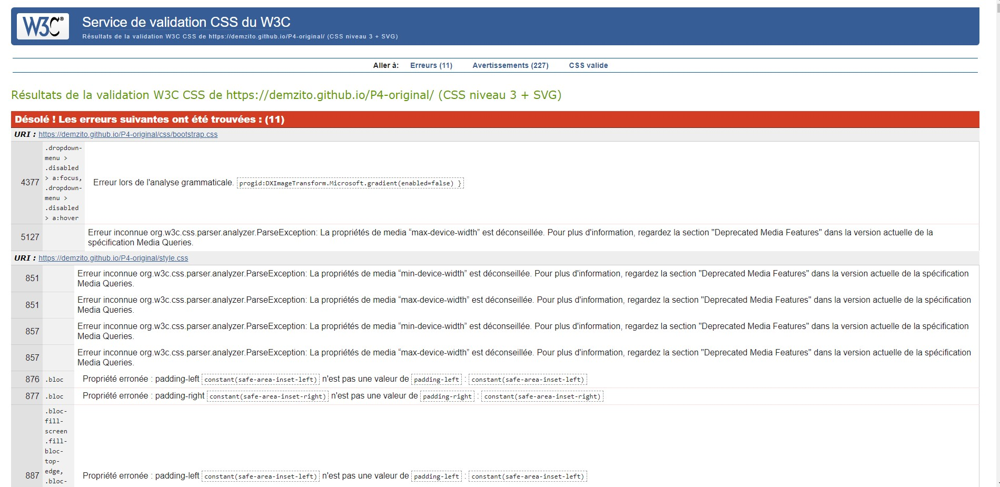
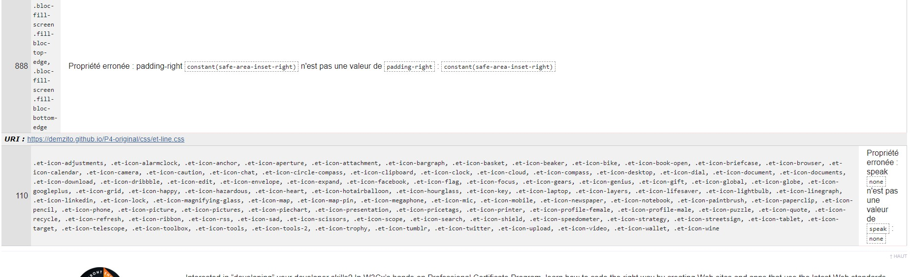
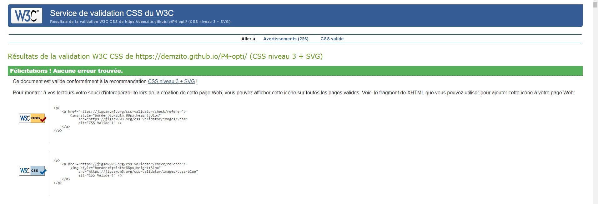
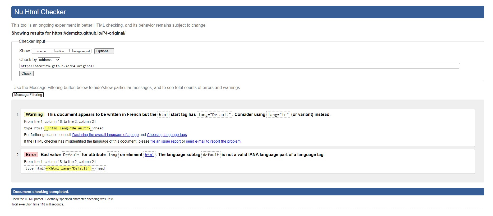
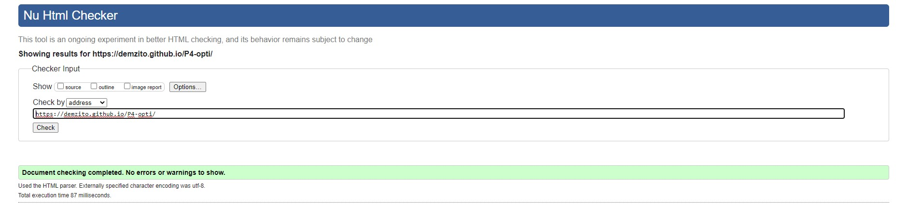

Voici la comparaison entre le site original de La Chouette Agence et ma version du site une fois optimisé.
Dans un premier temps regardons les résultats du site original sur PageSpeed Insights :
Dans un second temps voyons les résultats de ma version du site optimisé :
Le score global du site, est passé de 79 à 94. Nous avons gagné 1,9 secondes en performance de chargement(LCP).
Il est important pour un site d'avoir une bonne stabilité visuelle, pour offrir une bonne expérience utilisateur, les pages doivent conserver un CLS inférieur à 0,1. Le CLS du site original est de 0,137, après mon optimisation il est de 0,047
J'ai également utilisé le service de validation CSS du W3C, voici le test du site original :
 Voici le résultat du test CSS de W3C après mon optimisation :
Pour tester le code HTML j'ai utilisé "Nu HTML Checker" qui est également un service de validation du W3C. Voici le test de la version original du site :
Et enfin, voici le résultat du test HTML de W3C sur ma version du site optimisée :
